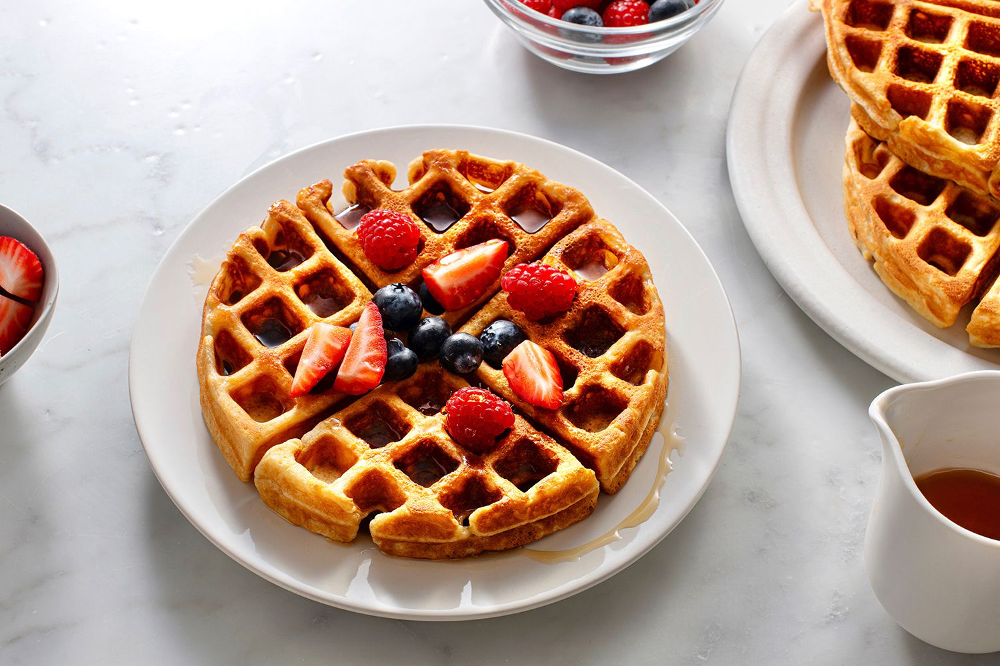

Home
Waffles Recipe

Description
This Homemade Waffle Recipe is easy and makes delicious waffles! These waffles are perfectly crisp and golden on the outside while being light and fluffy on the inside!
Ingredients
- 2 Cups All purpose flour
- 1 tsp Salt
- 4 tsps Baking powder
- 2 tbs Sugar
- 2 Eggs
- 1.5 cups milk
- 0.3 cup melted butter
- 1 tsp vanilla extract
Steps
- Mix all the dry ingredients(flour,baking powder,salt,sugar) together in a large bowl and set it aside
- Preheat the waffle iron
- In a seperate bowl mix all the wet ingredients(eggs,milk,vanilla extract) together
- Combine the wet and dry ingredients until they are blended
- Oil the waffle iron
- Pour a ladle of the batter into the preheated waffle iron
- Cook waffles until golden and crispy
- Repeat steps 6-7 until batter is finished
- Serve your waffles hot and ready!
<<< Previous Page
Next Page >>>